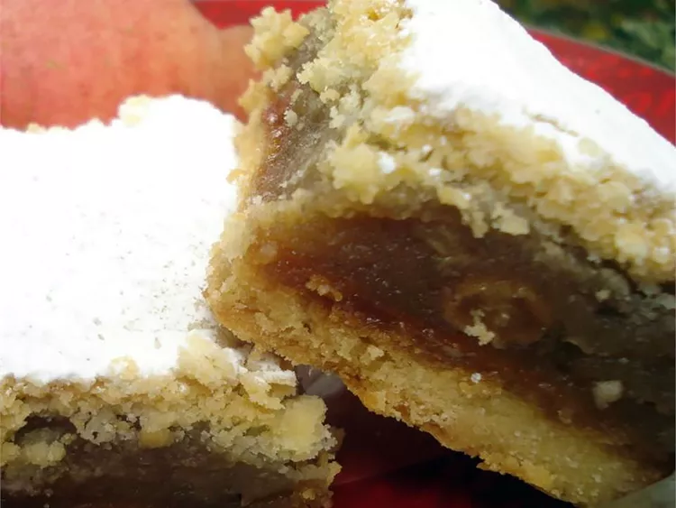

Croatian Apple Pie

- Prep Time: 20 mins
- Cook Time: 50 mins
- Chill Time: 2 hrs
- Total Time: 3 hrs 10 mins
- Servings: 8
Ingredients
- 2 1/2 cups all-purpose flour
- 1 1/4 cups very cold unsalted butter, cut into cubes
- 1/4 cup Demerara sugar
- 2 large egg yolks
- 2 tablespoons sour cream
- 1 tablespoon plum brandy
Fillings
- 2 1/4 pounds apples - peeled, cored, and sliced
- 2/3 cup raisins
- 1/3 cup Demerara sugar
- 1 1/2 teaspoons vanilla sugar
- 1/2 teaspoon ground cinnamon
- 1/2 lemon, juiced
- 1/2 cup apricot jam
- 2 tablespoons confectioners sugar for dusting, or as needed
Directions
- Add flour and butter to a large bowl, and use your fingertips to rub butter into flour
until mixture resembles coarse breadcrumbs with no large lumps of butter remaining.
- Add the 1/4 cup Demerara sugar, egg yolks, sour cream, and brandy to flour mixture and
combine with a spatula just until the dough comes together. Wrap dough in plastic wrap and chill for at least 2 hours or overnight.
- Meanwhile, place apples, raisins, the 1/3 cup Demerara sugar, vanilla sugar, cinnamon, and lemon juice in a saucepan. Bring to a
simmer over medium-low heat and simmer until apples are tender, and mixture is slightly thickened, about 10 minutes. Set aside to cool.
- Preheat the oven to 400 degrees F (200 degrees C). Line a 9x16-inch baking pan with parchment.
- Divide the chilled dough into two equal pieces. Roll the dough out on a lightly floured surface into 2 9x16-inch rectangles.
Place one of the rectangles into the prepared baking pan.
- Bake in the preheated oven until a pale crust develops on top, 10 to 15 minutes. Remove from the oven.
- Carefully brush the semi-baked crust with apricot jam. Evenly distribute filling over the crust. Place the
second rectangle of dough on top and prick it all over with a fork.
- Bake until crust is lightly browned and filling is hot and bubbly, about 30 minutes.
- Remove to a wire rack, and allow to cool slightly, about 10 minutes. Dust the still-warm pie with confectioner’s sugar,
cut into squares, and serve warm or at room temperature.
Go back home